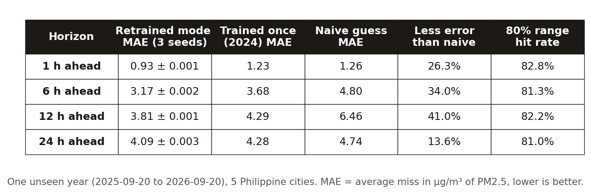

Half a day ahead, it misses by 41.0% less than a naive guess
Walk-forward MAE beats persistence at every horizon, by 13.6% to 41.0%
less error than "the air stays the same", 12 hours ahead, over one full year the model never saw.
The test year runs from 2025-09-20 to 2026-09-20: every season, rainy and dry, in Manila, Quezon City, Cebu, Davao and Baguio. The model trained only on the hours before it, then forecast every hour of that year. Each forecast was compared with what actually happened.
Test window 2025-09-20 to 2026-09-20, 43,685 hourly targets per horizon pooled
over five cities. Training rows are purged so no target falls inside the test year.
Same hyperparameters as the live model (sklearn clone), seeds 0, 1 and 2;
the spread across seeds is at most 0.003 µg/m³.


data/walkforward.json and data/intervals.json by docs/make_figures.py.What "naive guess" means, and why it is the right rival
Persistence says the air in 6 hours will be exactly what it is now. It sounds lazy, but air changes slowly, so it is hard to beat over the next hour. A forecaster that cannot beat it is not worth running. At 1 hour the model is 26.3% better; its lead grows to 41.0% at 12 hours and falls back to 13.6% at 24 hours.
Knowing the air now does not help you plan tomorrow
Nowcasts are common; honest short-range forecasts are not
If you jog, walk kids to school, or have asthma, the useful question is not "how is the air?" but "when is it cleanest today?". Most Philippine air trackers only show the current reading. Hangin' forecasts 1, 6, 12 and 24 hours ahead and turns each number into advice anyone can act on, like "take it easy outside".
Target: PM2.5 in µg/m³, mapped to the 2024 US EPA AQI bands for the advice text. Horizons 1, 6, 12 and 24 h. The value of a forecast is its skill over a trivial baseline, so every claim on this page is skill over persistence on held-out time, never in-sample fit.
Not medical advice
The tips follow US EPA air-quality bands. They are general guidance, not a doctor's advice.
One model per horizon, learning from five cities at once
Pooled gradient-boosted trees with lag, weather and calendar features
For each forecast the model looks at 43 signals: the pollution right now and over the past two days, the weather (wind, rain, humidity, how well the air can mix and clear), and the clock and calendar (rush hour, weekends, seasons, even New Year fireworks). The five cities train one shared model, so a pattern learned in Cebu can help Davao.
HistGradientBoostingRegressor with absolute-error loss, one per horizon,
43 features: pollutant levels, PM2.5 lags 1 to 48 h, rolling means and
spread, wind vectors, a ventilation index (wind × boundary-layer height), cyclic
time encodings, a fireworks flag, and a categorical city code. Hyperparameters from a
40-trial random search per horizon. Data is reindexed to a strict hourly grid per
city so every lag is exactly its stated length.
- Data: Open-Meteo, free and keyless: CAMS air quality plus weather archive and forecast.
- Live: a GitHub Action runs the forecast about every hour and republishes the dashboard.
- Monthly: a second Action retrains the models and ships them only if they beat the live ones on the latest 30 days.
The first version looked great, then quietly stopped beating the naive guess
Distribution shift and a seasonal holdout inflated the original 1 h score
The first model was trained once, on 2022 to 2024, and scored 18.8% better than naive at 1 hour on its own test. When I replayed it on 2025 and 2026, air it had never seen, that lead fell to 2.2%. In the hot months it was worse than simply guessing "same as now".
Original chronological holdout (last 20% of 2022 to 2024): +18.8% at 1 h. Replayed on 2025-01 to 2026-09 without retraining: +2.2%, negative in several April to August months of both years. The holdout sat mostly in the easy late-2024 dry season, so the headline was partly a calendar effect.
Retraining the same recipe on newer data brought the 1-hour lead back to 26.3% on the full test year, against 2.6% for the stale model. So the model is now retrained every month, and a new one only replaces the live one if it is better on the latest 30 days.
When it says "80% sure", reality lands inside 81 to 83% of the time
Quantile models plus a conformal margin reach nominal coverage
Every forecast comes with a shaded range on the chart. A range is only honest if it catches reality as often as it claims. The first version did not: it caught the real value only 72 to 74% of the time. Widening it by an amount measured on the three months before the test fixed that.
10th and 90th percentile HistGradientBoosting models, then a split-conformal margin: the 80th percentile of the calibration misses on the 90 days before the test year. Raw coverage 72 to 74%, calibrated 81 to 83% on the test year. Misses lean high (real value above the band), which is where smoke spikes live.
I tried to fix the weakest number and it did not clear the bar I set
A pre-registered 24 h attempt: real gain, below the 2% threshold
The 24-hour lead (13.6%) is the number a skeptic points at first. Before running anything I wrote down the one target, two ideas, and the rule for "it won": at least 2% less error at 24 h, and more than three times the seed-to-seed noise. Then I ran it exactly once.
- Idea 1: the weather forecast for the target hour (wind and rain), as it was issued a day earlier, never the weather that actually happened.
- Idea 2: what the air was like at that same hour over the past week.
| 24 h, 3 seeds | Mean error | Better by |
|---|---|---|
| Current model | 4.092 | |
| + forecast wind and rain | 4.044 | 1.2% |
| + same hour, past 7 days | 4.067 | 0.6% |
| Both | 4.019 | 1.8% |
Both together helped by 1.8%, a real gain, but under the 2% bar. So the live model stays. I did not move the bar after seeing the result. The same features helped 6 h and 12 h more, which needs its own test before it can be claimed.
It forecasts a model of the air, not a street sensor
The target is CAMS, and CAMS tracks Manila's sensors loosely
The "real" air values Hangin' learns from come from CAMS, a European computer model of the atmosphere, not from sensors on the street. So I checked CAMS against 63 low-cost sensors around Manila for a year. It gets which days are dirty mostly right, but hour to hour it follows them loosely, and on average it missed the sensors by about as much as "same as yesterday" did.
Median of 63 outdoor OpenAQ low-cost sensors within 25 km of Manila, 8,735 hours. CAMS vs sensors: r = 0.46 hourly, 0.67 daily; MAE 8.58 µg/m³ vs 8.46 for yesterday's sensor value at the same hour. Low-cost sensors read high in humid air, so this is a check, not a verdict.
- So the claim is "beats a naive guess", not "beats the free forecast". CAMS publishes its own forecast of the same numbers, and a fair contest against it needs sensor truth.
- Trained on the sensors instead, it still beats the simple guesses. A Manila-only model trained on sensor readings (2024-08-01 to 2025-09-20) and scored on the same test year missed by 6.66 µg/m³ at 6 h, against 8.01 for the best simple guess: 1.3% to 16.9% less error across 1 to 24 h. One city and one seed, so a pointer, not a headline.
- 24 hours is the weak spot: 13.6% better than naive, with a wide range.
- It under-calls sudden spikes. Smoke and traffic spikes land above the range more often than below it.
- Only the 5 training cities are tested. The other cities on the map use the same model without their own test.
Six things that looked fine while being wrong
Silent failures, each caught by measuring rather than assuming
A test window that flattered the model
The original holdout sat in the easy dry months. The score was real, and misleading. Only replaying a new year showed it.
A rival graded against its own answers
I logged Open-Meteo's own forecast to compare against. Its first five graded forecasts missed by exactly 0.00, because the "real" values come from the same model. The column was removed rather than shown.
A map stamped "API KEY REQUIRED"
The free label tiles started returning a watermark instead of labels. Nothing errored; the map just looked broken. The labels now come from Esri's free layer.
A retrain gate too strict to ever pass
"No worse on any horizon" blocked a near-tie on its first run. Near-identical models always differ by noise somewhere, so that rule would have let the model go stale again. It now ships when better on average, with 2% slack on any one horizon.
An hourly job that failed when anyone else pushed
The refresh job takes about ten minutes, so any commit in that window made its push bounce. It now rebases before pushing; I proved the fix by pushing mid-run on purpose.
Health bands from an old table
The air score used the 2012 EPA table, so 9 to 12 µg/m³ was labelled "Good". The 2024 revision ends "Good" at 9.0. A test now pins every band edge to the EPA's current table.
Run it yourself
Everything runs on a laptop CPU with free data and no API keys. Times were measured on one laptop.
git clone https://github.com/Zeref538/hangin && cd hangin
pip install -r requirements.txt
python -m pytest -q # AQI table and feature timing checks
gh release download models -D data/models # the live models
python ml/live_eval.py # replay the 2024 models on 2025-2026 (~1 min)
python ml/walkforward.py # full-year test, 3 seeds (~4 min)
python ml/intervals.py # likely-range coverage (~4 min)
python ml/forecast.py # a live forecast
python docs/make_figures.py && python docs/build_case_study.py # this pageStack: Python, pandas, scikit-learn, React and Vite, GitHub Actions, Vercel. Source: github.com/Zeref538/hangin.